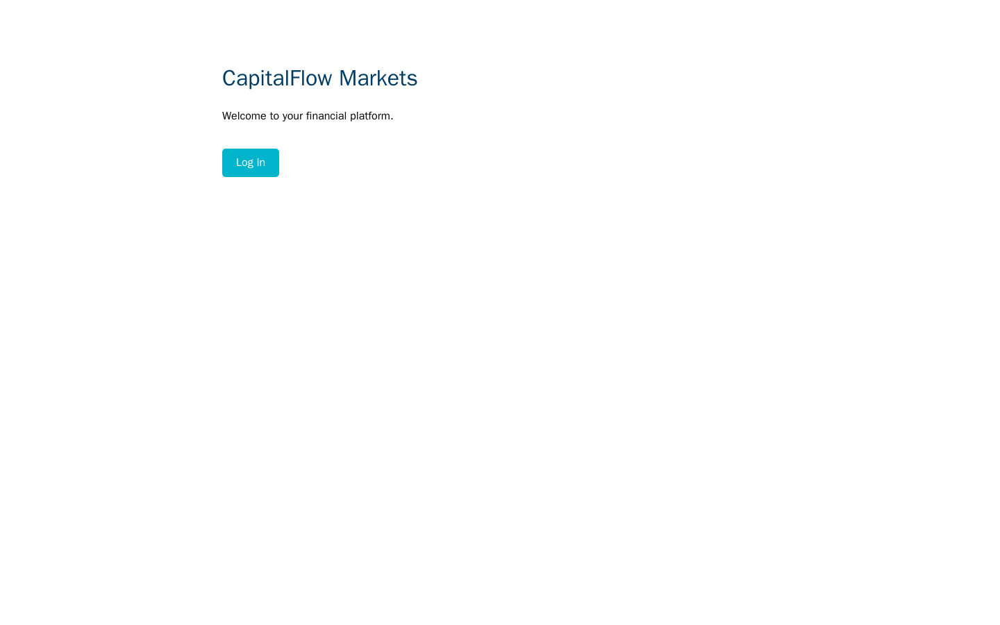
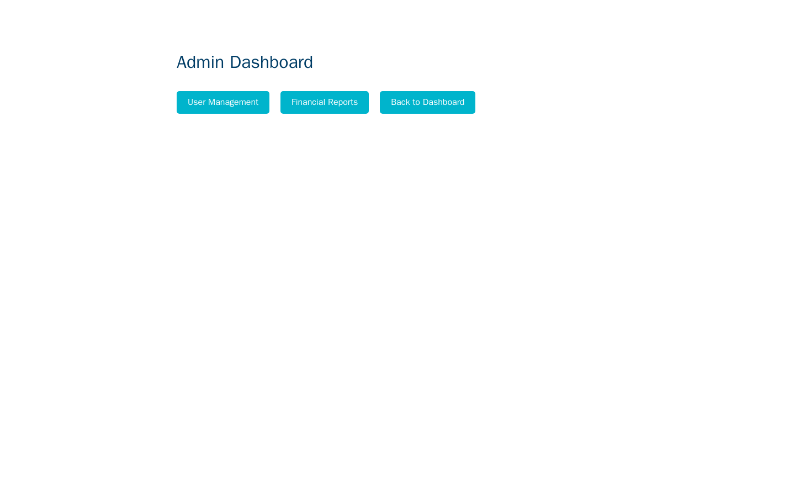

Exercise CF3.1: Broken Access Control
Before You Begin
You should have read the Chapter 3 Introduction, which explains the progression from authentication attacks to authorization failures and SQL injection. Your VPN must be connected and your terminal open. No credentials are needed for this exercise. The entire point is that sensitive resources are accessible without any authentication.
Scenario
CapitalFlow Markets patched their login system after your Chapter 2 assessment. Management is confident the platform is secure because authentication is now enforced on the main login page. However, the development team deployed several administrative pages and API endpoints that were never integrated into the authentication framework. Internal tools, report generators, and data APIs sit on the same web server, accessible to anyone who knows (or guesses) the URL.
Your assessment objective is to discover and access restricted administrative resources without logging in. The development team assumed that keeping these URLs out of the navigation menu was sufficient protection. Your job is to prove that assumption wrong.
Target: capitalflow-access.lab (port 80)
No credentials are provided. Authentication is not required to complete this exercise. The vulnerability is the absence of authorization checks on sensitive endpoints.

Your Objectives
- Enumerate the web server for hidden directories and administrative paths
- Identify API endpoints that return sensitive data without authentication
- Examine page source code for references to internal resources
- Access a restricted admin report containing the flag
- Submit the flag in
OCR{...}format
Background: Authentication vs. Authorization
Two Separate Controls
Authentication and authorization are distinct security controls that developers frequently conflate. Understanding the difference is critical for both attacking and defending web applications.
Authentication answers the question: "Who are you?" Login forms, API keys, certificates, and multi-factor tokens are all authentication mechanisms. They verify identity.
Authorization answers the question: "What are you allowed to do?" Role checks, access control lists, and permission matrices are authorization mechanisms. They enforce boundaries after identity is established.
A system can have strong authentication and broken authorization simultaneously. If every page requires a login but any logged-in user can access the admin panel, authorization is broken. If certain pages skip the authentication check entirely, both controls are missing.
OWASP Broken Access Control
Broken Access Control holds the number one position in the OWASP Top 10 (2021). It moved up from fifth place in the 2017 edition. The category includes:
| Failure | Description |
|---|---|
| Missing authentication | Pages or APIs that require no login at all |
| Missing authorization | Authenticated users accessing resources above their privilege level |
| IDOR | Predictable object references (IDs, filenames) that allow access to other users' data |
| Forced browsing | Accessing administrative pages by guessing URLs that are not linked in the navigation |
| Metadata manipulation | Modifying tokens, cookies, or hidden fields to escalate privileges |
Exercise CF3.1 focuses on the first and fourth categories: endpoints with no authentication and forced browsing to discover them.
Why "Security Through Obscurity" Fails
Developers sometimes believe that unlisted URLs are safe because "nobody knows the path." Automated directory enumeration tools like gobuster, dirb, and feroxbuster test thousands of common paths per second. Paths like /admin, /dashboard, /api/users, and /reports appear in every wordlist. Obscurity is not a security control.
Tool Primer: gobuster
Gobuster is a directory and file brute-forcing tool written in Go. It sends HTTP requests for every entry in a wordlist and reports which paths return valid responses.
Basic Directory Enumeration
Key flags:
| Flag | Purpose |
|---|---|
dir |
Directory/file enumeration mode |
-u |
Target URL |
-w |
Path to wordlist file |
-t |
Number of concurrent threads (default 10) |
-s |
Status codes to consider valid (default: 200,204,301,302,307,401,403) |
-x |
File extensions to append (e.g., -x php,html,txt) |
-o |
Output results to a file |
Interpreting Results
Each result line shows the discovered path and its HTTP status code:
- 200 means the resource exists and returned content
- 301/302 means the path redirects somewhere (follow it)
- 403 means the server knows the path exists but denied access (still valuable information)
- 401 means the server requires authentication (confirms the path exists)
- 404 means the path does not exist (gobuster filters these by default)
Walkthrough
Step 1: Launch the Exercise
Open the platform and launch "Broken Access Control." Note the target IP for capitalflow-access.lab.
Step 2: Explore the Public Site
Start by examining what the site exposes publicly.
Read the HTML output. Look for navigation links, JavaScript includes, HTML comments, and references to other pages. Note every URL path mentioned in the source.
The robots.txt file tells search engine crawlers which paths to avoid indexing. Developers frequently list sensitive paths here, effectively creating a roadmap for attackers. Look for Disallow: entries that reference admin panels, API paths, or internal tools.
Sitemaps can reveal the full URL structure of the application, including pages the developers did not intend to be publicly discoverable.
Step 3: Enumerate Hidden Directories
Use gobuster to discover paths that are not linked from the homepage.
Kali - Run directory enumeration with a common wordlist
Review every result. Pay special attention to paths returning 200 (accessible) or 301/302 (redirects to content). Record each discovered path. Common administrative paths include /admin, /dashboard, /reports, /settings, /config, and /internal.
Kali - Run a second pass targeting API paths
API directories often contain data endpoints that bypass front-end access controls. Record every /api/* path that returns a valid response.
Step 4: Probe Common Administrative Paths
Even without gobuster, experienced testers check a standard set of paths manually. Try each of these:
Kali - Check standard admin paths
The -o /dev/null flag discards the response body, and -w "%{http_code}" prints only the status code. Any path returning 200 is accessible without authentication. Any path returning 301 or 302 may redirect to content worth investigating.
For each path that returned a 200 or redirect, fetch the full content:
Examine the response for user data, configuration details, internal links, or references to additional endpoints.

Look for financial data, user lists, system status indicators, or links to reports and exports.
Step 5: Explore Unprotected API Endpoints
API endpoints frequently lack authorization checks, especially when they were built for internal use and later exposed on the public-facing server.
Kali - Check the transactions API
If the endpoint returns JSON data, examine every field. Look for account numbers, trade details, timestamps, and any fields containing notes or flags.
An unauthenticated user listing exposes usernames, email addresses, roles, and potentially hashed passwords. Record everything.
Kali - Check the reports API
Report endpoints often aggregate sensitive data from multiple sources. Look for financial summaries, audit logs, and compliance reports.
Step 6: Inspect HTML Source for Hidden References
Developers sometimes leave references to internal tools in HTML comments or JavaScript variables.
Kali - Search the homepage source for comments and hidden links
HTML comments (<!-- ... -->) frequently contain TODO notes, debugging URLs, and references to endpoints that were meant to be removed before deployment. JavaScript src attributes may point to admin-specific scripts that reveal endpoint paths.
Kali - Search the admin page source for additional endpoints
Follow every link and script reference you find. Each one may lead to additional unprotected resources.
Step 7: Find the Flag
The flag is stored in a restricted admin report that has no access control check. Based on the paths you discovered in previous steps, access the report endpoint:
Look for the flag in OCR{...} format in the response body. If the report page contains links to individual reports, follow each one:
Kali - Search all discovered pages for the flag pattern
Once you locate the flag, submit it on the platform.
Record Your Findings
Paths discovered via robots.txt:
Paths discovered via gobuster:
Path Status Code Content Summary Unprotected API endpoints:
Endpoint Data Returned HTML comments or hidden references found:
Flag:
OCR{...}
Analysis Questions
1. The admin report page returned a 200 status code with full content, even though you never authenticated. What server-side check is missing, and where should it be implemented?
Reveal Answer
The server is missing an authorization middleware or decorator on the admin report route. Every request handler for a restricted resource should verify that the requester has a valid session token AND that the session belongs to a user with the appropriate role (e.g., admin). The check should be implemented at the route handler level (as middleware or a decorator that runs before the handler function), not in the front-end navigation. Front-end controls (hiding menu links, disabling buttons) are cosmetic and provide no security because attackers interact directly with the server using tools like curl.
2. A developer argues that removing admin links from the navigation menu is sufficient protection because "nobody will guess the URL." Why is that argument flawed?
Reveal Answer
Directory enumeration tools like gobuster, dirb, and feroxbuster test thousands of common paths per minute against a target. Wordlists compiled from millions of real websites include paths like /admin, /dashboard, /reports, /api/users, and hundreds of variations. Robots.txt files, HTML comments, JavaScript source maps, and error messages also leak path information. Security through obscurity fails because the cost of guessing is near zero for an attacker while the cost of maintaining obscurity (ensuring no reference is ever leaked) is impossibly high.
3. You found unprotected API endpoints that return user data and transaction records. In a financial application, what regulatory and legal consequences could result from this exposure?
Reveal Answer
Financial applications are subject to regulations including PCI DSS (for payment data), SOX (for financial reporting integrity), GLBA (for consumer financial privacy), and GDPR/state privacy laws (for personal data). Exposing user records and transaction data without authentication violates multiple compliance requirements. Consequences include regulatory fines, mandatory breach notification to affected customers, civil liability for damages, loss of payment processing privileges, and reputational harm. The lack of access controls would also fail any SOC 2 audit, potentially disqualifying the company from enterprise partnerships.
Key Takeaways
- Broken access control is the number one vulnerability in the OWASP Top 10 because it is pervasive and the impact is severe
- Authentication (verifying identity) and authorization (enforcing permissions) are separate controls that must both be implemented on every restricted endpoint
- Hiding URLs from navigation menus provides zero security; directory enumeration discovers unlisted paths in seconds
- Robots.txt, HTML comments, JavaScript files, and error messages frequently leak the paths developers tried to hide
- API endpoints are especially prone to missing authorization because developers build them for internal use and forget to add access controls when the API becomes externally reachable
- Every server-side route handler for restricted content must verify both authentication and authorization before returning data